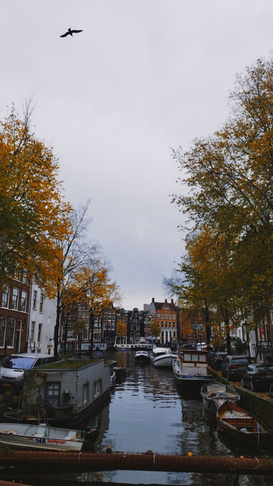
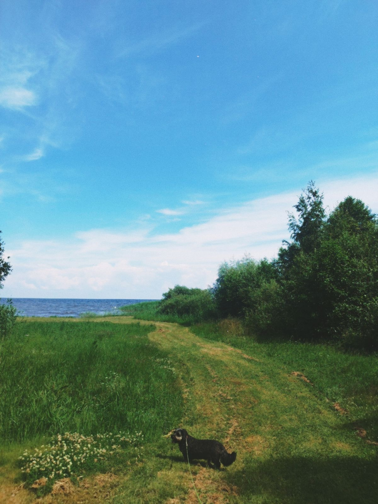
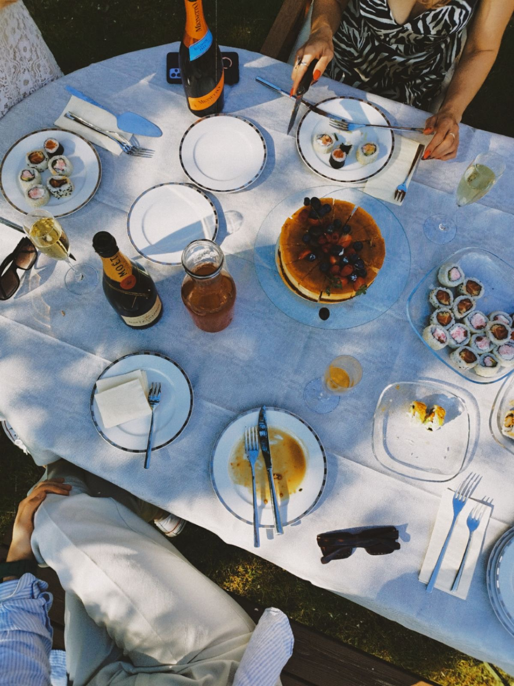
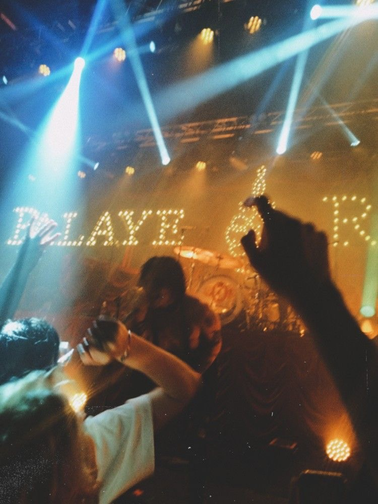
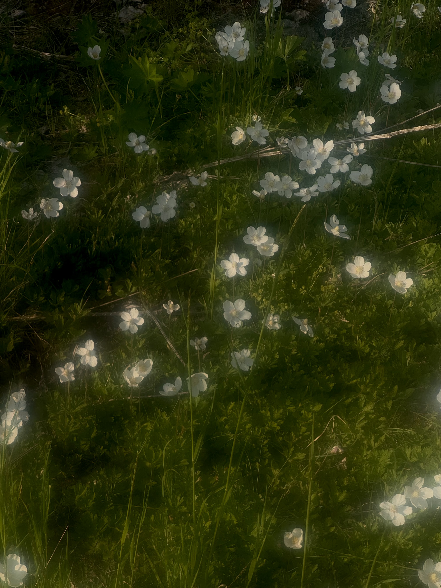
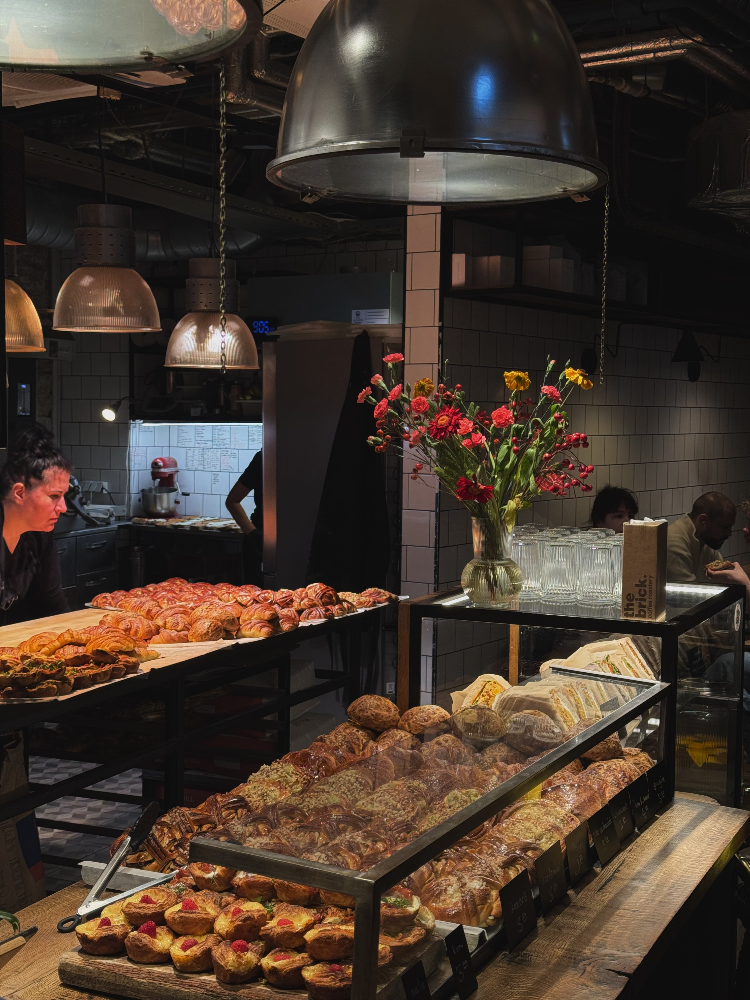
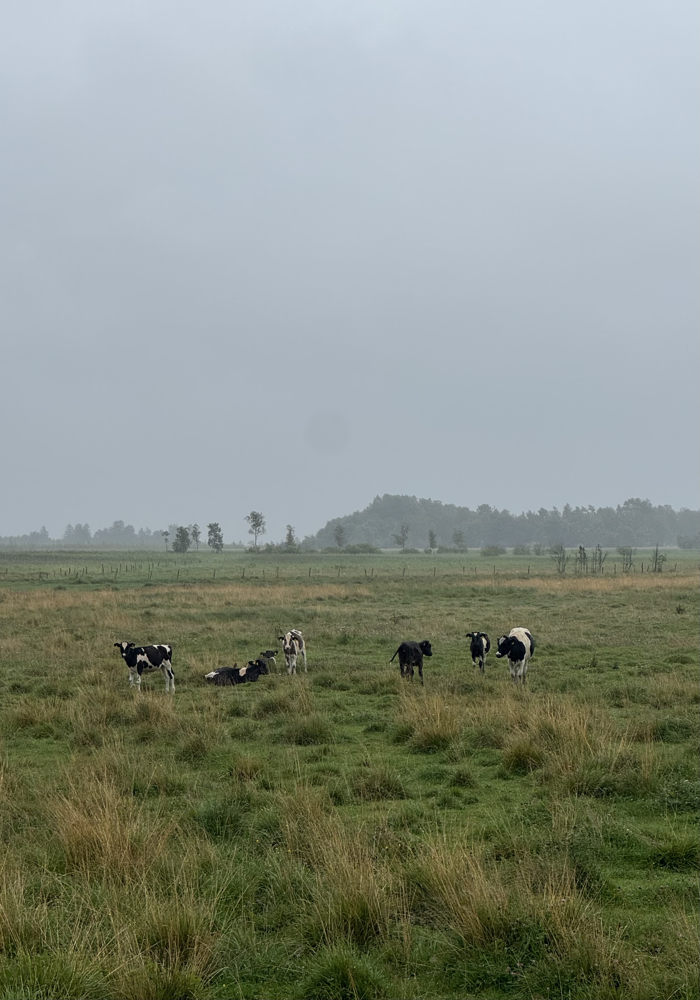

Photography
Welcome to my mini photowall! All (except the first 2 pictures — taken by Viktoria Kovalenko) are taken by me. I have edited all the pictures, and I am also the model on these. Click any picture to see it up close.







